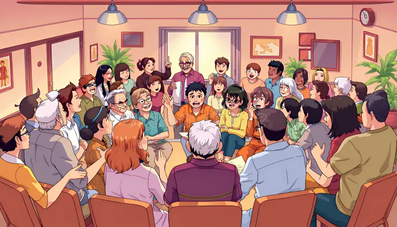
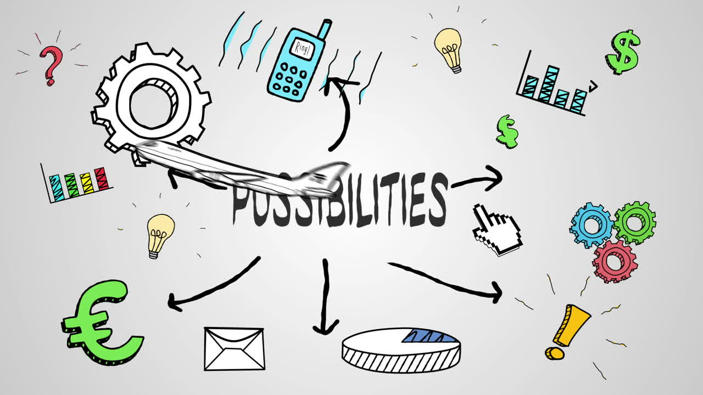
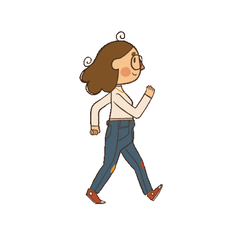
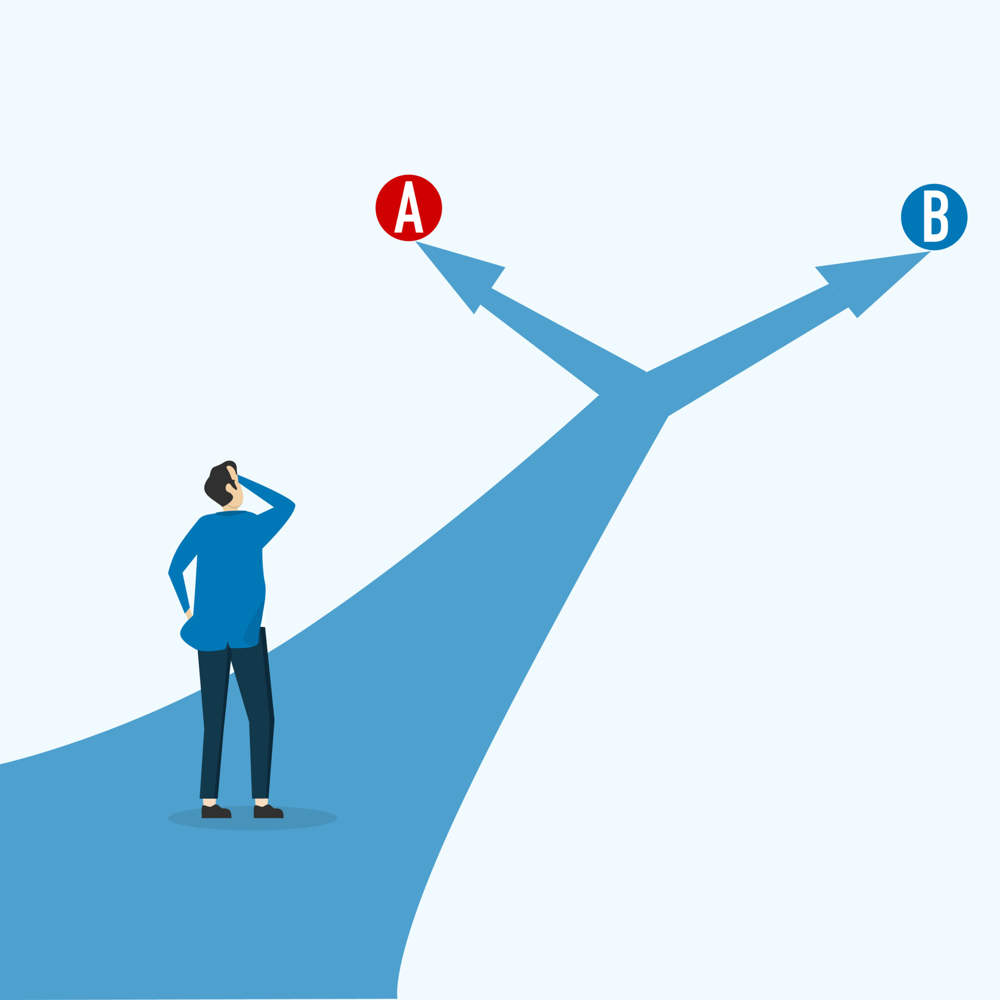
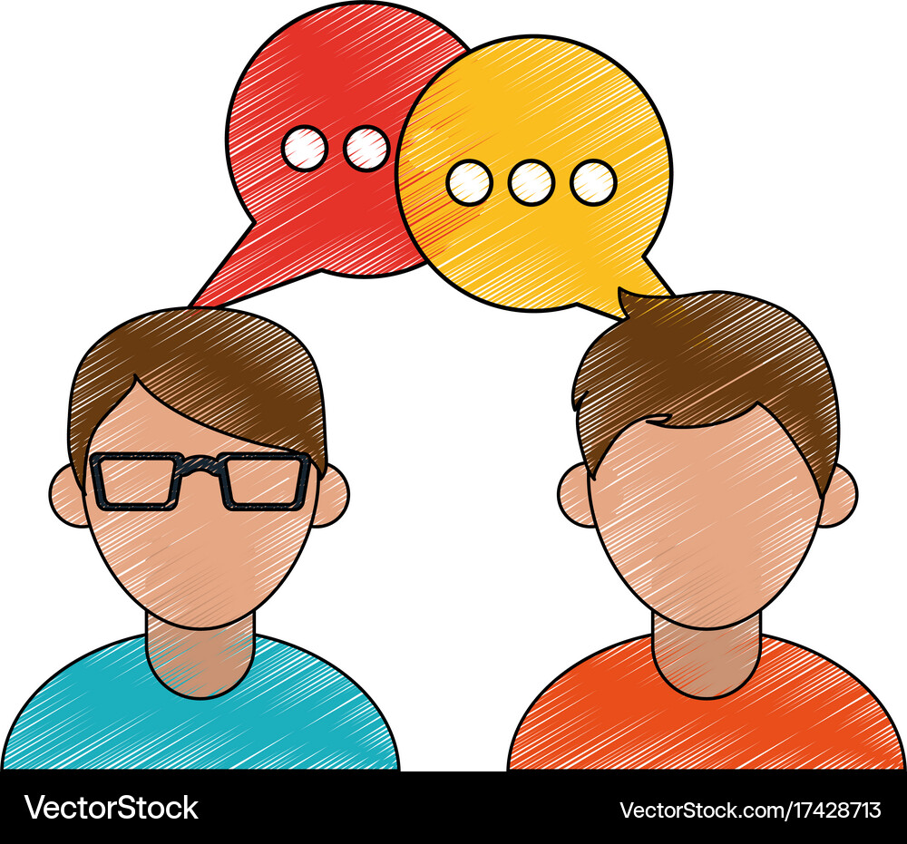
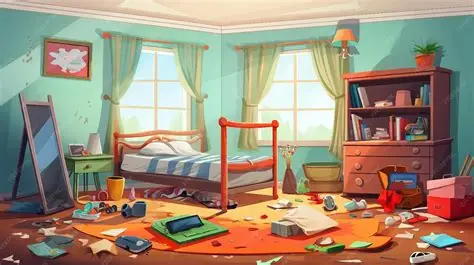

Welcome to the MBTI Personality Test! The test will indicate your personality type based on your responses.
1. After a social gathering, you feel?

2. You prefer to spend your time:
3. You tend to:
4. You trust more:
5. You focus more on:

6. You prefer:

7. When making decisions, you prioritize:

8. When a friend vents to you, you tend to:

9. Which of the two choices you believe to be more important?
10. You prefer:
11. Your room is usually:

12. Deadlines to you are: